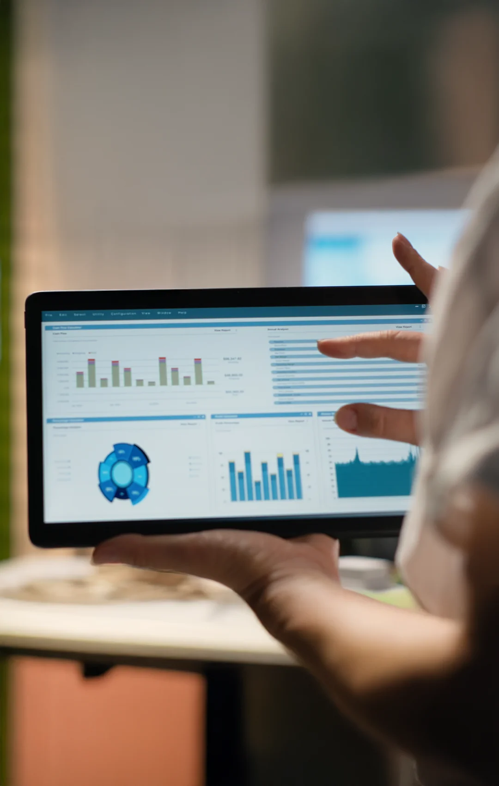

Zafer Mah. Şevketiye Cad. Garipoğlu Apt. No:9 İç Kapı No: 3 İlkadım / Samsun

EDC kurulumundan veri kilitlemesine ve istatistiksel analize kadar tam hizmet.
Klinik araştırmanızda toplanan her bir verinin doğru, eksiksiz ve güvenilir olmasını sağlıyor; ardından bu verileri anlamlı istatistiksel sonuçlara dönüştürüyoruz. Hizmetimiz iki temel aşamadan oluşur:
1. Veri Yönetimi (Data Management):
2. Biyoistatistik (Biostatistics):

Çalışmaya özel EDC sistemi ve CRF kurulumu, validasyon ve kullanıcı eğitimini sağlıyoruz.
Veri temizliği, kodlama ve doğrulama süreçlerini GCP standartlarında yürütüyoruz.
SAP'ye uygun analizler, TLF üretimi ve final rapor hazırlığını gerçekleştiriyoruz.